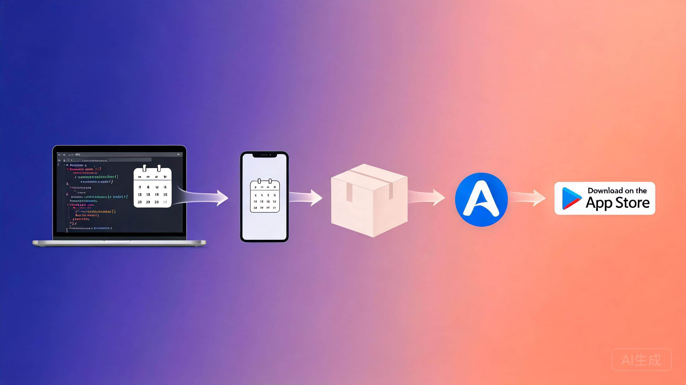

从打开 Xcode 到真机测试，再到上架 App Store——一份写给非程序员的图文教程
先看全景，再走细节。整个过程可以分成 4 个大阶段：
磨刀不误砍柴工，先把硬件和账号准备好
| 物品 | 要求 | 用途 |
|---|---|---|
| Mac 电脑 | M1/M2/M3/M4 或 Intel 均可，macOS 14+ | 运行 Xcode |
| Xcode | 16.0 或更新版本（App Store 免费下载） | 编译 App |
| iPhone | iOS 17 或更新 | 真机测试 |
| 数据线 | iPhone 原装 Lightning / USB-C | 连接 Mac 和 iPhone |
| Apple ID | 普通 Apple ID 可真机调试；上架需 付费开发者账号（$99/年） | 签名 & 上架 |
Xcode，点击「获取」下载（约 12GB，耐心等待）。+ 登录你的 Apple ID。把「清和日历」的代码拿到你的 Mac 上
# 打开「终端」App，粘贴以下命令回车 git clone https://github.com/你的用户名/qinghe-calendar.git # 代码会下载到当前目录的 qinghe-calendar 文件夹
Package.swift（项目入口）、Sources/（代码）、Assets/（图标和资源）、README.md（说明）。
本项目是 Swift Package，没有 .xcodeproj 文件，直接打开 Package.swift 即可
⌘O）。Package.swift 文件，点「打开」。给代码套一个「运行壳」，并让你的 Apple ID 给 App 签名
清和日历（或英文名 QingheCalendar）SwiftUISwiftContentView.swift 等），全部删掉（选中按 Delete，选「Move to Trash」）。
+。LunisolarCalendarApp，点 Add。Embed & Sign。在你的宿主 App 文件夹里新建一个 Swift 文件（File → New → File… → Swift File），命名为 HostApp.swift，内容如下：
import SwiftUI import LunisolarCalendarApp @main struct HostApp: App { var body: some Scene { WindowGroup { AdaptiveRootView() .environment(EventStore.shared) } } }
com.你的名字.qinghe。
先在电脑上的虚拟 iPhone 里看看效果
⌘R）。把 App 装到你自己的 iPhone 上
⌘R，App 自动安装到手机并打开。把 App 打包成可上传的安装包
⌃⌘⇧B）。把安装包传到苹果的服务器
在网页后台填写 App 的名称、描述、截图等
+ → 新建 App。最后一步：交给苹果审核
遇到问题先看这里
LunisolarCalendarApp 即可。⌘S 截屏。+ → 搜索「清和」→ 选择喜欢的小组件样式添加。